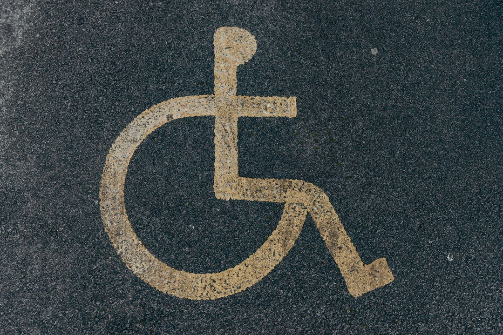
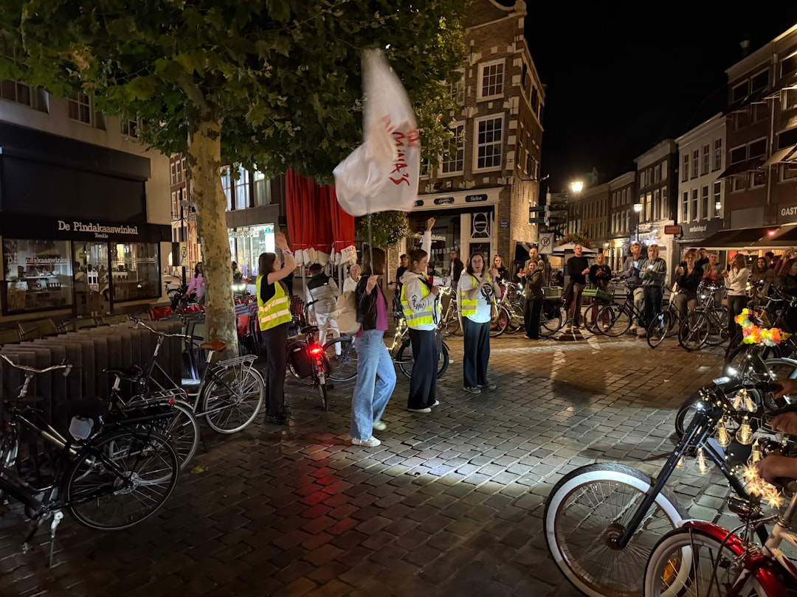

Purpose
Create accessible spaces for civic information, local events, community storytelling and practical participation.
BrisConnect is a coded academic community platform prototype for helping Brisbane residents discover events, resources and participation pathways.
Create accessible spaces for civic information, local events, community storytelling and practical participation.
This is a front-end prototype. It does not replace emergency services, collect live public submissions or operate as a production community service.
| Value | Design decision | Implemented element |
|---|---|---|
| Visibility | Use warm, readable colours and clear page structure. | High contrast text, consistent headings and visible controls. |
| Narrative | Use image captions and plain summaries to give content context. | Story cards, descriptive alt text and resource summaries. |
| Respect | Keep language direct and avoid unnecessary jargon. | Plain-English page copy and labelled form controls. |
| Openness | Be transparent about prototype limits and data handling. | Static demo messaging and README documentation. |
The visual direction keeps the original warm BrisConnect identity while pairing imagery with explanatory captions.


The project uses semantic landmarks, skip links, labelled forms, keyboard-operable controls, live result counts, clear focus styles, descriptive image alt text and responsive layouts. ARIA is used only where it supports dynamic status updates or pressed states.